DOORI — Support & User Guide
Privacy policy: yongkyoku.github.io/doori-privacy
1. Overview
DOORI connects your phone directly to an automatic-door controller (MCU) so you can open, close, and monitor the door.
- Connection — connects directly to the door controller on the same Wi-Fi network (default port 50001).
- Local only — the app works only while your phone is on the door's Wi-Fi (AP). Cellular data and remote access are not supported.
- Languages — Korean · English · 中文 · 日本語.
- Display — theme (dark / light / white) · text size (small / normal / medium / large, settings screens only) · button size (fixed / fit to screen).
2. Getting started
Supported devices
| Platform | Requirement |
|---|---|
| Android | Android 5.1 or later (most devices released since 2015) |
| iPhone | iOS 13 or later — iPhone 6s · SE (1st gen) and newer |
| iPad | Not supported (iPhone-only app) |
| All | The device must be able to join the same Wi-Fi as the door controller |
Connection steps
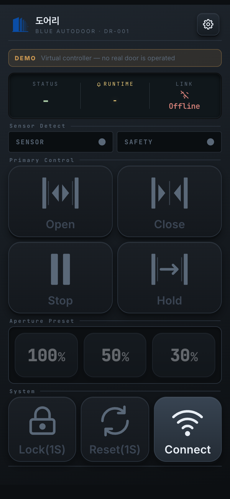
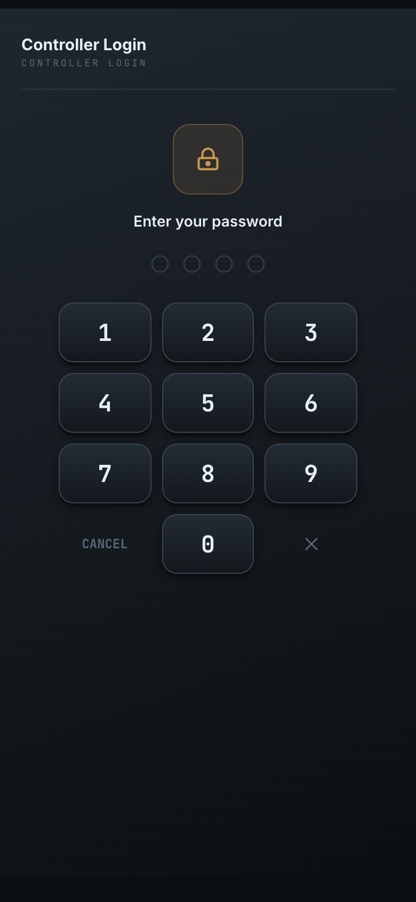
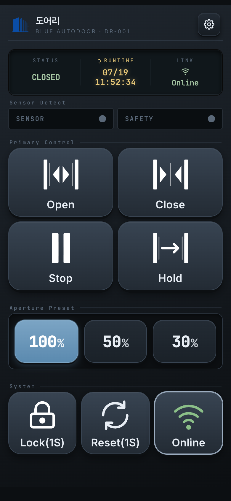
- Join the door controller's Wi-Fi with your phone. The door broadcasts its own Wi-Fi — ask your installer for the network name and password.
- Launch DOORI. On a cold start a splash screen shows for about 1.4 seconds, then the app opens on the home screen in offline mode (it does not connect automatically). The splash appears only on a fresh launch, not when you return from another app.
- Tap the Connect button in the system area at the bottom right of the home screen.
- If you are on another Wi-Fi or Wi-Fi is off, a dialog appears with a (Wi-Fi name) join button (Android 10+).
- Once connected, the password screen appears. Enter the 4-digit password provided by your installer.
Connecting…= in progress /Online(green) = normal /Connect= disconnected (tap to reconnect)
3. Home screen
The home screen looks different depending on the theme, but the layout and behaviour are identical. From top to bottom:
3.1 Header
App icon, app name and model on the left; the Settings button on the right.
3.2 Status panel
| Field | Meaning |
|---|---|
| STATUS | Current state — OPENING / CLOSING /
OPEN / CLOSED / STOPPED / ERROR /
HOLD / LOCKED. Shows - when there is nothing to report. |
| RUNTIME | When the last action happened (month/day and time, on two lines).
Shows - if there is no history. |
| LINK | Connection state — Online (green) /
Connecting… (amber) / Offline (red) |
Colours: in-progress states and stop are yellow, error and locked are red, everything else (open / closed / hold) is green.
How STATUS and RUNTIME are filled in
- Before connecting — the last recorded action and its time. If there is no history at all,
both show
-. - The moment you connect — STATUS shows the controller's current state. Because that is a
state and not an action you just performed, RUNTIME stays
-. - After connecting — once the door actually moves, RUNTIME is stamped and updates with every action.
3.3 Sensor indicators (SENSOR / SAFETY)
- SENSOR — detects a person or object and triggers the door to open.
- SAFETY — the safety sensor that prevents the door from closing on someone.
The two have opposite roles: SAFETY prevents closing, SENSOR triggers opening. An indicator blinks red while detecting, and stays lit for at least about one second so that brief detections are still visible.
3.4 Primary controls
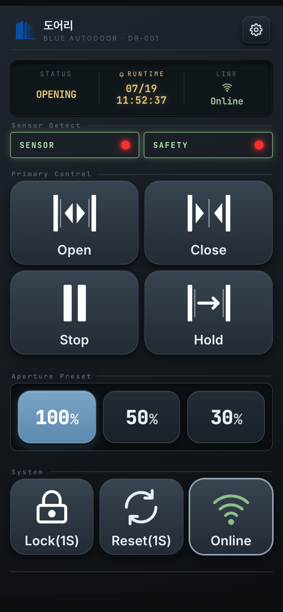
| Button | Action |
|---|---|
| Open | Opens the door to the selected aperture. |
| Close | Closes the door. |
| Stop | Stops the door where it is. |
| Hold | Opens fully and keeps the door open. |
These are enabled only while connected and unlocked.
3.5 Aperture preset (100 / 50 / 30)
Choose how far the door opens. Tapping a preset only sends the aperture to the controller — the door does not move immediately. It takes effect the next time you tap Open.
3.6 System buttons
| Button | Action |
|---|---|
| Lock / Unlock | Requires a long press (1 second by default) to avoid
accidental taps; the button shows the hold time, e.g. Lock(1S). While locking, it
shows Locking… until the controller confirms. |
| Reset | Requires a long press (1 second by default,
shown as Reset(1S)) to send a reset command to the controller. A short tap does nothing. |
| Connect / Online / Connecting… | Connects and disconnects. Green
Online is the normal state. |
4. Connecting to the controller
- Connecting — the app never connects on launch; you tap Connect on the home screen.
- Authentication — the password is requested once per session, on the first connection. After a successful entry, an Authenticated confirmation shows for about 1.2 seconds before the home screen appears.
- Automatic re-authentication — if the link drops and comes back, the app re-authenticates silently with the password you already entered. That password is kept in memory only while the app is running, so you enter it again after fully closing the app.
- Local only — if Wi-Fi goes away the app disconnects, and reconnects when it returns.
- Brief drops are handled silently. Longer outages raise a notification.
- The connection is checked automatically about every 3 seconds.
Joining the door's Wi-Fi — manual by default
Out of the box the app does not join Wi-Fi for you. Join the door's Wi-Fi from
your phone's Settings ▸ Wi-Fi (the name looks like WizFi360_…), then tap
Connect in the app.
If you tap Connect while on a different network, a dialog explains that you need to join the controller's Wi-Fi first. Switch networks and tap Retry.
Joining from inside the app (Auto WiFi join — Android 10+ · iPhone)
In Settings ▸ Network, turn on Auto WiFi join and enter the door's exact Wi-Fi name
(for example WizFi360_123456 — check your phone's Wi-Fi list). A
(Wi-Fi name) join button then appears in the connection dialog, so you never have to leave the app.
- Tap (Wi-Fi name) join.
- Your phone asks "Connect to device?" — tap Connect. This confirmation appears only the first time; afterwards your phone remembers it.
- Once joined, the app connects to the controller and moves on to the password screen.
5. Settings menu
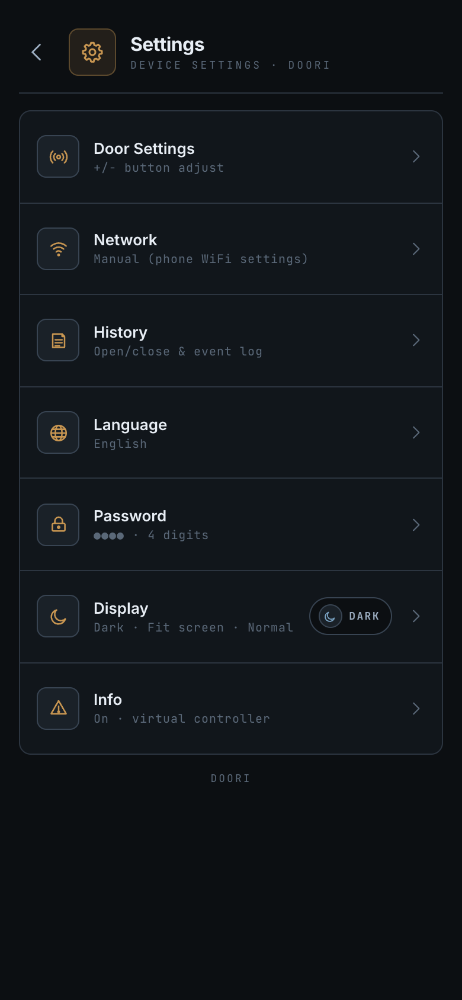
| Item | Description |
|---|---|
| Door Settings (top) | 15 operating parameters → 7 |
| Network | Controller Wi-Fi for automatic joining → 6 |
| History | Door activity log → 10 |
| Language | Korean / English / 中文 / 日本語 → 9 |
| Password | Change the 4-digit password → 8 |
| Display | Theme · text size · button size → 9 |
| Info | Model, firmware, serial and other device details |
6. Network settings
Open Network from the settings list.
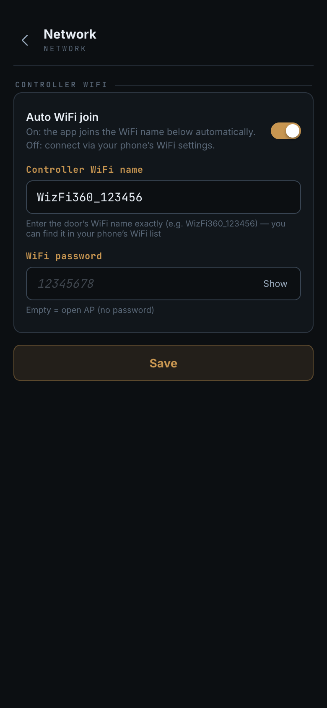
Controller Wi-Fi
This is the door Wi-Fi used by the in-app join described in section 4.
- Auto WiFi join (off by default)
- Off — the app does not join Wi-Fi. Connect to the door's Wi-Fi from your phone's Wi-Fi settings, then tap Connect. This works the same on every phone.
- On — the app tries to join the Wi-Fi name below, and a join button appears in the connection dialog.
- Controller WiFi name — the exact name of the door's Wi-Fi
(e.g.
WizFi360_123456). The last digits differ per unit, so check your phone's Wi-Fi list and type it exactly. - WiFi password — the door Wi-Fi password (as provided by your installer). Use the button on the right to show or hide it.
Wi-Fi details are only saved; they do not affect the current connection and apply from the next one. Because you specify an exact name, the app joins only that one door even if several are nearby.
7. Door settings
Open Door Settings at the top of the settings list.
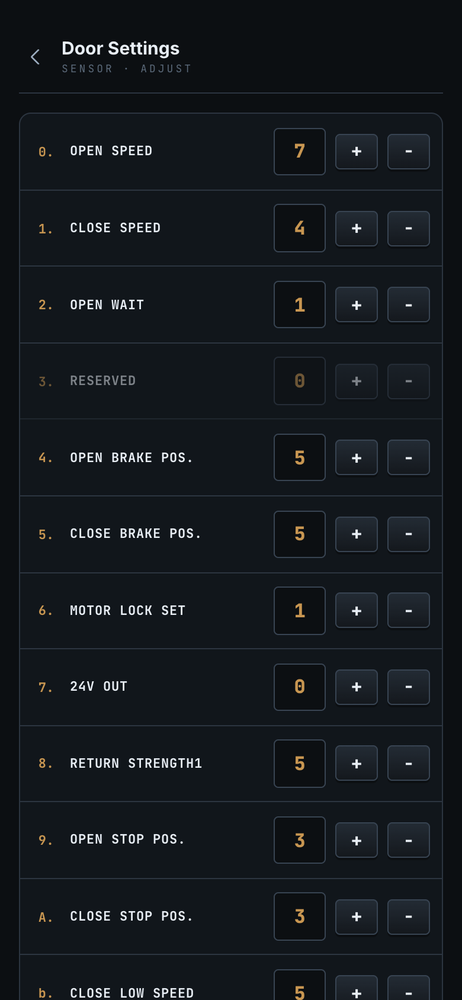
On entry the app reads all 15 current values from the controller. Adjust each one with the
+ and − buttons.
| # | Item | Meaning | Range |
|---|---|---|---|
| 0 | OPEN SPEED | Opening speed | 0–9 |
| 1 | CLOSE SPEED | Closing speed | 0–9 |
| 2 | OPEN WAIT | Hold-open time | 0–9 |
| 3 | RESERVED | Reserved (unused) | — |
| 4 | OPEN BRAKE POS. | Opening brake position | 0–9 |
| 5 | CLOSE BRAKE POS. | Closing brake position | 0–9 |
| 6 | MOTOR LOCK SET | Motor lock | 0–9 |
| 7 | 24V OUT | 24 V output | 0–1 |
| 8 | RETURN STRENGTH1 | Return force 1 | 0–9 |
| 9 | OPEN STOP POS. | Opening stop position | 0–9 |
| A | CLOSE STOP POS. | Closing stop position | 0–9 |
| b | CLOSE LOW SPEED | Low-speed closing | 0–9 |
| c | RETURN STRENGTH2 | Return force 2 | 0–9 |
| d | SETTING STRENGTH | Setting force | 0–9 |
| E | ONE_TOUCH SET | One-touch | 0–1 |
Buttons
- READ — fetch the current values from the controller again.
- SAVE — write all 15 values to the controller. The app always waits for the controller's reply, and the button is disabled once saving succeeds.
- DEFAULT — reset the on-screen values to the factory defaults (nothing is sent to the controller until you save).
- Values that have not been read yet show
—, and editing is blocked. Run READ first. - If there is no reply, the app retries once and then shows a "Could not read settings" dialog.
- If the controller does not reply to a save, a "No response" dialog offers [Retry]. If a late reply arrives and succeeds, the dialog closes by itself.
8. Password
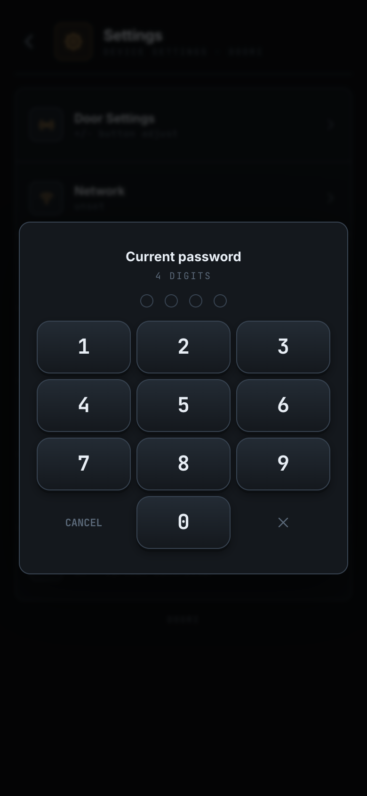
Open Password from the settings list to change the 4-digit controller password.
- Enter the current password.
- Enter the new password (it cannot be the same as the current one).
- Enter the new password again to confirm.
9. Language · Display
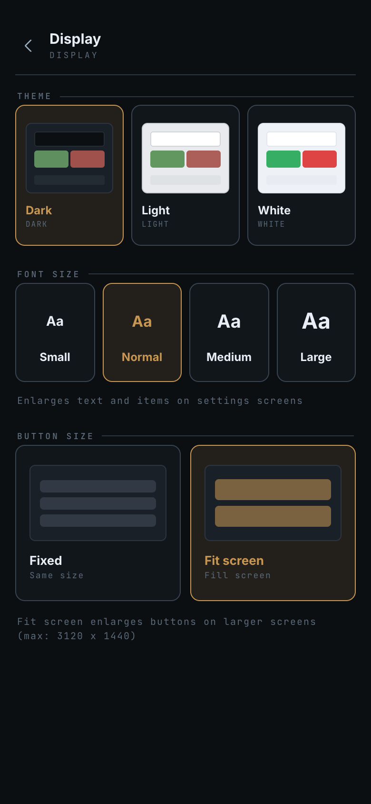
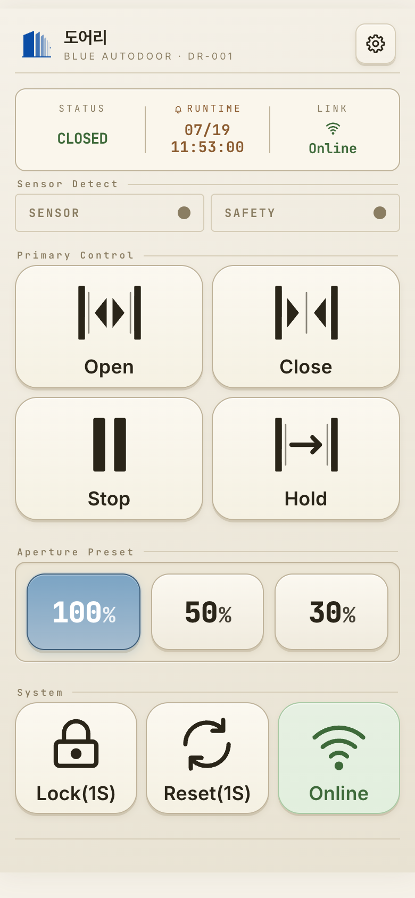
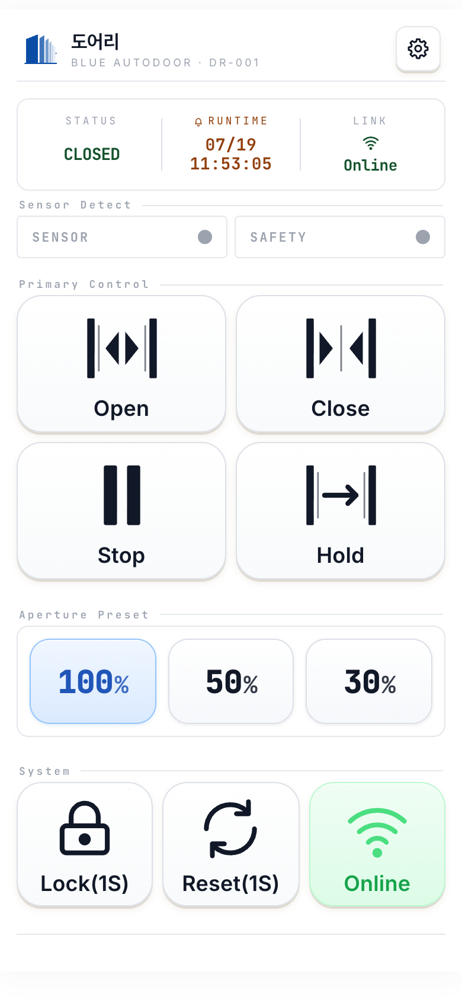
Language
Korean · English · 中文 · 日本語. On first launch the app follows your phone's language, falling back to English if it is not one of the four. Once you pick a language explicitly, that choice is kept.
Display
- Theme — dark / light / white.
- Text size — small / normal / medium / large. This affects the settings screens only; the home screen is unchanged so the controls stay in the same place.
- Button size — fixed, or fit to screen (default). "Fit to screen" scales the home buttons to fill the available height on your device.
10. History
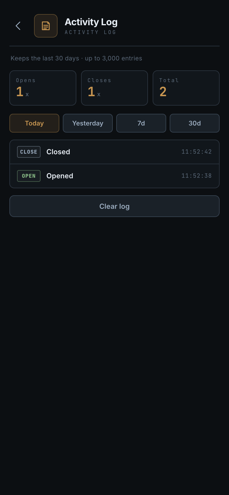
Open History from the settings list to review what the door has done.
- Recorded: open / close completed · stop · error plus lock / unlock / reset. Intermediate states such as "opening" are not recorded separately.
History keeps only state changes that actually happened on the controller. Periodic status checks, sensor indications and aperture changes are shown on screen but not recorded — this keeps the log from filling up with repeated identical entries.
- Filters: today / yesterday / 7 days / 30 days, with open and close counts at the top.
- Retention: the most recent 30 days and up to 3,000 entries (older entries are removed automatically). You can also clear the history entirely.
11. Troubleshooting
| Symptom | What to check |
|---|---|
| Cannot connect | Make sure your phone is on the same Wi-Fi as the controller and try again. If it still fails, check the door's power and your distance from it, then contact your installer. |
| Cannot connect on iPhone only | The iOS Local Network permission is off. Enable it in Settings ▸ DOORI ▸ Local Network. |
| Frequent disconnects | Check your distance from the door and anything blocking the signal — a weak Wi-Fi signal causes repeated drops and reconnects. If it persists, contact your installer. |
| Control buttons are gray | The app is not connected, or the door is locked. |
| Cannot open Door Settings | You must be connected to the controller. |
Values show only — | They have not been read yet. Tap READ. |
| Cannot change the password | The password lives on the controller, so you must be connected to change it. |
| Want to connect over cellular data | Not supported. Join the door's Wi-Fi (AP) first. |
| No join button for the door's Wi-Fi | The in-app join appears only when Auto WiFi join is on (Settings ▸ Network, Android 10+ · iPhone). Otherwise connect from your phone's Wi-Fi settings. |
| No internet while using DOORI | Normal — the door's Wi-Fi has no internet. Your phone usually falls back to cellular data, and returns to your previous Wi-Fi when you disconnect. |
| "Wi-Fi not found" when joining | Check that the Controller WiFi name in Settings ▸ Network matches the real name exactly (see your phone's Wi-Fi list), and that the password is correct. |
| Forgot the password | The password is stored on the controller (MCU). Contact your installer. |
| Not reconnected after you were away | This is normal — see "When the app does not reconnect on its own" below. |
| Not reconnected after using another Wi-Fi | Switch your phone back to the door's Wi-Fi, then tap Connect on the home screen. |
When the app does not reconnect on its own — reconnecting manually
DOORI only works on the door's Wi-Fi. So once your phone leaves that network, the app
stops retrying in order to save battery. This is expected behaviour, not a fault. The
LINK field shows Offline and the control buttons are greyed out.
| Situation | What the app does |
|---|---|
| You walk away and leave the door's Wi-Fi | Tries a few times, then stops quietly |
| Your phone falls back to cellular data | Also stops (the door cannot be reached over cellular) |
| You move to another Wi-Fi (home, office…) | Tries a little longer, then stops |
| You return to the door's Wi-Fi | Usually reconnects automatically |
| A brief drop from a weak signal | Retries automatically a few times |
Two steps to fix it
- Check that your phone is on the door's Wi-Fi.
- Tap the
Connectbutton at the bottom right of the home screen. This restarts the connection from scratch and always works, even after automatic retries have stopped.
Connect once. It is much faster than waiting for the app to
reconnect by itself.12. FAQ
- Q. Can several phones control the door at the same time?
- Yes. Each phone connects and authenticates on its own. However, if several phones send commands at once, a command already in progress takes priority and others may appear to be ignored — so it is best to operate the door from one phone at a time.
- Q. I was away for a while and the app is disconnected. Is it broken?
- No. When your phone leaves the door's Wi-Fi, the app stops retrying to save battery. Rejoin the door's Wi-Fi and tap Connect on the home screen (see Troubleshooting).
- Q. If I leave the app running, will it connect by itself when I reach the door?
- If your phone stayed on the door's Wi-Fi, it usually reconnects automatically. But if it switched
to another Wi-Fi or to cellular data in the meantime, you need to tap
Connectyourself. - Q. I forgot the password.
- The password is stored on the controller (MCU). Contact your installer, or reset the controller.
- Q. Can I use apertures other than 100 / 50 / 30?
- The home screen offers only those three presets (there is no slider).
- Q. Can I open my door from outside (over the internet)?
- No. DOORI connects only within the same Wi-Fi (AP) as the door. Remote control raises security concerns and is handled as a separate product configuration.
- Q. Does the app collect any personal data?
- No. There are no accounts, no sign-up and no communication with external servers. See the privacy policy for details.